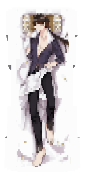

This resource pack adds dakimakura. To get dakimakura, you just need to present white dye on the anvil. All available dakimakura with characters are in the document. In order for the mod to work, install CIT Resewn or install optifine. Link to resource pack
| Model | Rename | Item | Character |
|---|---|---|---|
| Ayaka dakimakura | White dye | Ayaka | |
| Astolfo dakimakura | White dye | Astolfo | |
| Aqua dakimakura | White dye | Aqua | |
| Clorinde dakimakura | White dye | Clorinde | |
| Eula dakimakura | White dye | Eula | |
| Frieren dakimakura | White dye | Frieren | |
| Hange dakimakura | White dye | Hange | |
| Jotaro dakimakura | White dye | Jotaro | |
| Kaguya dakimakura | White dye | Kaguya | |
| Levi dakimakura | White dye | Levi | |
| Makima dakimakura | White dye | Makima | |
| Miku dakimakura | White dye | Miku | |
| Rei dakimakura | White dye | Ayanami Rei | |
| Rem dakimakura | White dye | Rem | |
| Speedwagon dakimakura | White dye | Speedwagon | |
|  | Zhongli dakimakura | White dye | Zhongli |